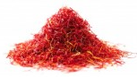

Začini
Zanimljivo je na koji način su začini uticali na tokove civilizacija. Korišćeni su u narodnoj medicini, ishrani, proizvodnji parfema... Danas su u upotrebi mnogobrojni začini, a samo neki od njih su:
-
biber
- beli
- crni
- zeleni
- šafran
- kurkuma
- kardamon
Prvi začini kojima se trgovalo su biber i cimet, a vreme za koje se podatak vezuje je čak 2000 godina pre nove ere.
skok na tabelu sa podacima o proizvodnji
